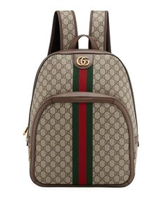

Test Image - 
Output on Microsoft Azure -Accessory
Output on Wolfram -Duffel bag
Result - Microsoft Azure is more accurate
Test Image -
Output on Microsoft Azure -Television
Output on Wolfram -Flat panel display
Result - Wolfram is more accurate
Test Image - 
Output on Microsoft Azure -Shoe
Output on Wolfram -Bowling shoe
Result - Microsoft Azure is more accurate
Test Image -
Output on Microsoft Azure -Cartoon
Output on Wolfram -Ash's Pikachu
Result - Wolfram is more accurate
Test Image - 
Output on Microsoft Azure -Floor
Output on Wolfram -Mechanism
Result - Wolfram is more accurate